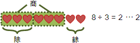
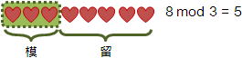
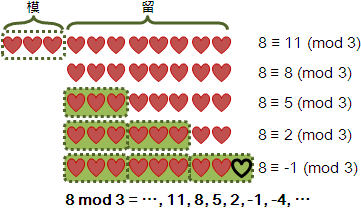
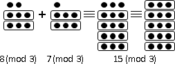
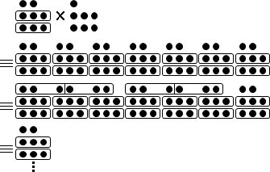
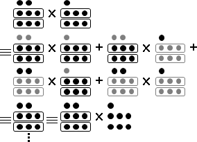

Residue
整數除法：被除數除以除數得到商數與餘數。分堆到底為止。

可以分堆、補堆任意次數的時候，除數就變成了「模數」，餘數就變成了「留數」。

餘數只有一個，留數有無限多個。只要隨便求出一個餘數，不斷加減模數，就得到各個留數；各個留數皆平等，任選一個當代表都行，通常是寫最接近零、大於等於零的那一個。一般使用≡全等符號表示各個留數兩兩之間的平等關係。

中文習慣把留數也稱作餘數。以下皆用餘數稱呼留數。
中英對照
被除數 dividend
除數 divisor
商數 quotient
餘數 remainder
模數 modulus
留數/殘數/殘值/餘數 residue
全等/同餘 congruence
餘數運算
residue一般是指「殘值」，例如殘值定理；在餘數系統，則是指「餘數」，是一個實際數值。
congruence一般是指「全等」，例如三角形全等；在餘數系統，則是指「同餘」，是一種抽象概念，是一個運算符號。
計算學家重視數值，因此演算法書籍喜愛討論residue；數學家重視性質，因此數學書籍喜愛討論congruence。
實數運算，等於=不是主角，加減乘除才是主角；餘數運算，同餘≡當然也不是主角，加減乘除才是主角。
因此接下來將要討論residue的加減乘除。
+
模數相同時，餘數可相加。

8 (mod 3) + 7 (mod 3) ≡ 15 (mod 3)
8 (mod 3) + 7 (mod 3) + 6 (mod 3) ≡ 21 (mod 3)
模數相同時，mod符號可以精簡成一個，寫在式子後面。
8 + 7 ≡ 15 (mod 3)
8 + 7 + 6 ≡ 21 (mod 3)
餘數加法實際上是「無限多個」加「無限多個」等於「無限多個」。這三項當中，任取一個餘數當代表都行，等式皆成立。然而實際計算時，大可不必想得如此複雜，就是加與模，求得最接近零、大於等於零的那一個餘數。
延伸閱讀：模數不一致的加法
雞肋。窮舉每一種餘數並且相加。
1 (mod 4) + 1 (mod 6)
≡ ⋯ ∪
{ 1 (mod 4) + -5 } ∪
{ 1 (mod 4) + 1 } ∪
{ 1 (mod 4) + 7 } ∪
⋯
≡ { 0 (mod 4) } ∪ { 2 (mod 4) }
−
模數相同時，餘數可相減。
8 - 7 ≡ 1 (mod 3)
8 - 7 - 6 ≡ -5 (mod 3)
UVa 10787
×
餘數可以乘上整數倍率，等同於連加。

8 (mod 5) × 7 ≡ 56 (mod 5)
8 (mod 5) × 7 × 6 ≡ 336 (mod 5)
倍率可以推廣成餘數。換句話說：模數相同時，餘數可相乘。

8 (mod 5) × 7 (mod 5) ≡ 56 (mod 5)
8 (mod 5) × 7 (mod 5) × 6 (mod 5) ≡ 336 (mod 5)
模數相同時，mod符號可以精簡成一個，寫在式子後面。
8 × 7 ≡ 56 (mod 5)
8 × 7 × 6 ≡ 336 (mod 5)
直接套用「整數乘法」的演算法。
UVa 10787
÷
已知一乘數、乘積，求另一乘數。
☐ × 7 ≡ 21 (mod 5)
8 × ☐ ≡ 56 (mod 5)
移項一下，即是除法。
21 ÷ 7 ≡ 3 (mod 5)
56 ÷ 7 ≡ 8 ≡ 3 (mod 5)
餘數除法、實數除法，概念完全不同。實數除法具備「分成幾等份」的意義，而餘數除法不具備這種意義！餘數除法被定義成餘數乘法的反運算。餘數除法的本質是乘法式子解未知數。
任選一個餘數當代表，儘管看似無法整除，卻存在計算結果。
☐ × 7 ≡ 21 (mod 5) -> 3 × 7 ≡ 21 (mod 5) -> 21 ÷ 7 ≡ 3 (mod 5)
☐ × 7 ≡ 16 (mod 5) -> 3 × 7 ≡ 16 (mod 5) -> 16 ÷ 7 ≡ 3 (mod 5)
☐ × 7 ≡ 11 (mod 5) -> 3 × 7 ≡ 11 (mod 5) -> 11 ÷ 7 ≡ 3 (mod 5)
☐ × 7 ≡ 6 (mod 5) -> 3 × 7 ≡ 6 (mod 5) -> 6 ÷ 7 ≡ 3 (mod 5)
☐ × 7 ≡ 1 (mod 5) -> 3 × 7 ≡ 1 (mod 5) -> 1 ÷ 7 ≡ 3 (mod 5)
有時候也可能無解、多解。
☐ × 2 ≡ 3 (mod 4) -> 3 ÷ 2 ≡ ☐ (mod 4) ☐不存在
☐ × 4 ≡ 5 (mod 10) -> 5 ÷ 4 ≡ ☐ (mod 10) ☐不存在
☐ × 3 ≡ 0 (mod 6) -> 0 ÷ 3 ≡ ☐ (mod 6) ☐是0或2
☐ × 3 ≡ 3 (mod 12) -> 3 ÷ 3 ≡ ☐ (mod 12) ☐是1或5或9
究竟如何計算餘數除法呢？數學家發明了倒數！
倒數
數學家利用等量乘法原理，建立倒數的概念。
1 ÷ 7 ≡ ☐ (mod 5) 移項之後的式子
☐ × 7 ≡ 1 (mod 5) 原問題
☐ × 7 × 7 ≡ 1 × 7 (mod 5) 等號兩側同乘以「7的倒數」
☐ ≡ 1 × 7 (mod 5) 7乘以「7的倒數」令它是1，就能消掉。
數學家於是規定：原數與倒數相乘等於1。除法變成「乘以倒數」，解決了看似無法整除的情況！
1 ÷ 7 ≡ 1 × 7 ≡ ☐ (mod 5)
預先求出倒數，便可計算餘數除法！
模5的時候，7的倒數是3。因為 7 × 3 ≡ 1 (mod 5)。
7 ≡ 3 (mod 5)
21 ÷ 7 ≡ 21 × 7 ≡ 21 × 3 ≡ 63 ≡ 3 (mod 5)
20 ÷ 7 ≡ 20 × 7 ≡ 20 × 3 ≡ 60 ≡ 0 (mod 5)
3 ÷ 7 ≡ 3 × 7 ≡ 3 × 3 ≡ 9 ≡ 4 (mod 5)
2 ÷ 7 ≡ 2 × 7 ≡ 2 × 3 ≡ 6 ≡ 1 (mod 5)
1 ÷ 7 ≡ 1 × 7 ≡ 1 × 3 ≡ 3 ≡ 3 (mod 5)
實數系統的倒數，就是分子與分母顛倒。餘數系統的倒數，可以運用「輾轉相除法」求得。
倒數的定義
a × a ≡ 1 (mod m)
已知a與m，欲求a，
使得 a × a ≡ 1 (mod m)。
取其中一個餘數當作代表，上式可以重新整理成
a × a = 1 + m × k
a × a - m × k = 1
a × a + m × (-k) = 1
再利用延伸版本的輾轉相除法，
求得a與m的最大公因數（必須是1），
並求得倍率a與(-k)。
其中a就是我們想要的「a的倒數」。
根據輾轉相除法的推導結果，如果一個數與模數的最大公因數等於一（互質），才擁有倒數。
最大公因數是1，才能一路逆推，使得倒數的式子成立。
a × a + m × (-k) = 1
a × a - m × k = 1
a × a = 1 + m × k
a × a ≡ 1 (mod m)
換個角度來說。模數是質數，每一個數都有倒數；模數不是質數，只有跟模數互質的數才有倒數！
我不知道如何判斷餘數除法是唯一解、無解、多解。
反元素（inverse element）、單位元素（identity element）
世界事物往往相對，有前就有後，有上就有下。
創造一個數學運算，往往就出現了反向運算：加法之於減法，乘法之於除法，函數之於反函數。
一般來說，正與反是能夠等量相消的。用以等量相消的元素，稱作「反元素」：加法的反元素是負數-x，乘法的反元素是倒數1/x，函數的反元素是反函數f⁻¹。所謂的「元素」，視情況是指數值、是指函數、是指矩陣、……，算是個總稱。
正與反等量相消之後，成為了一個無能的、沒用的元素，稱作「單位元素」：加法當中，數與負數相加等於單位元素，是零；乘法當中，數與倒數相乘等於單位元素，是一；函數轉換中，函數與反函數合成等於單位函數（identity function）；矩陣與反矩陣合成等於單位矩陣（identity matrix），對角線是一、其餘是零。
每當數學家創造新的數系、創造新的數學運算，就會勘查反元素、單位元素。學習這些概念後，就有了個行動綱領，就有了個標準作業流程SOP，用以對付人類還不曉得的數學。
數學系的基礎代數課程，就會提到反元素、單位元素。雖然是形而上，但是這不是什麼深奧的數學概念，讀者不必自己嚇自己。
^
餘數可以有整數次方，等同於連乘。
8 (mod 3) ^ 3 ≡ 8 (mod 3) × 8 (mod 3) × 8 (mod 3) ≡ 512 (mod 3)
套用「整數次方」的演算法即可。
次方可以推廣成餘數，但是次方的模數不是原本模數。
「Fermat's Little Theorem」
若模數是質數p，則次方的模數正是p-1。
2 (mod 7) ^ 100 ≡ 2 (mod 7) ^ 100 (mod 6)
「Carmichael's Theorem」
若模數與底數互質，則次方的模數，
是模數的「Carmichael Function, λ(m)」的其中一個因數。
2 (mod 9) ^ 100 ≡ 2 (mod 9) ^ 100 (mod λ(9))
「Euler's Theorem」
若模數與底數互質，則次方的模數，
是模數的「Euler's Totient Function, φ(m)」的其中一個因數。
φ(m)不精準，有多餘的因數，有些因數不可能是次方的模數。但是φ(m)比較容易求得。
2 (mod 9) ^ 100 ≡ 2 (mod 9) ^ 100 (mod φ(9))
若模數是普通數字，則沒有數學公式，只能使用窮舉法求得次方的模數。
計算λ(m)和φ(m)，需要質因數分解，曠日費時，乏人問津。況且我們也不確定是λ(m)和φ(m)的哪一個因數。
但是如果預先知道λ(m)或φ(m)，就可以預先將次方值模λ(m)或φ(m)，以加速次方運算。
預先知道 φ(9) = 6
2 (mod 9) ^ 100
≡ 2 (mod 9) ^ 100 (mod φ(9))
≡ 2 (mod 9) ^ 100 (mod 6)
≡ 2 (mod 9) ^ 4 (mod 6)
≡ 16 (mod 9)
≡ 7 (mod 9)
UVa 374
倒數（模數是質數）
根據費馬小定理，當模數為質數p，那麼倒數即是p-2次方。
模數為質數p
a ^ p ≡ a (mod p)
a ^ (p-1) ≡ 1 (mod p) 當 a ≢ 0 (mod p)
a ^ (p-2) × a ≡ 1 (mod p) 當 a ≢ 0 (mod p)
a = a ^ (p-2) (mod p) 當 a ≢ 0 (mod p)，0沒有倒數
不必另外撰寫輾轉相除法。時間複雜度也差不多。
倒數表（模數是質數）
若模數是質數，則每一個數都有倒數！
此時可以預先建立倒數表，預先計算每一個數的倒數。建立倒數表有著較快的演算法，時間複雜度為O(N)，N為模數大小。大可不必逐個數字套用輾轉相除法。
p % i = p - (p ÷ i) × i
p % i ≡ - (p ÷ i) × i (mod p)
inv[i] ≡ - (p ÷ i) × inv[p % i] (mod p) i移項到左邊，p%i移項到右邊
log
已知底數、乘積，求指數。
8 ^ ☐ ≡ 512 (mod 3)
移項一下，即是對數。
8 (mod 3) ^ 3 (mod φ(3)) ≡ 512 (mod 3)
log₈( 512 (mod 3) ) ≡ 3 (mod φ(3))
宛如餘數除法，餘數對數可能是唯一解、無解、多解。
演算法非常多，此處僅介紹Baby-step Giant-step Algorithm。為求簡單起見，此處僅討論底數與模數互質的情況。
原理是試誤法。a^0到a^(m-1)依序等分為n個區塊，第一區塊採用窮舉法，其餘區塊採用記憶法。
a ^ x ≡ b (mod m) 已知a b m，求x。另外gcd(a,m) = 1。
一、隨便選一個正整數n。（通常是sqrt(m)）
二、Baby-step，一共有n步：
甲、計算a^0, a^1, ..., a^(n-1)，
如果等於b，就找到答案了。
三、Giant-step，一共有m/n步：
甲、一口氣處理a^n到a^(2n-1)：
a^(n+k) ≡ b
a^n × a^k ≡ b
a^k ≡ b × inv(a^n)
先前計算的a^0, a^1, ..., a^n-1，
如果等於b × inv(a^n)，就找到答案了。
乙、一口氣處理a^2n到a^(3n-1)，
a^(2n+k) ≡ b
a^n × a^n × a^k ≡ b
a^k ≡ b × inv(a^n) × inv(a^n)
先前計算的a^0, a^1, ..., a^n-1，
如果等於b × inv(a^n) × inv(a^n)，就找到答案了。
丙、如法炮製。
採用陣列、以counting sort的手法儲存a^0到a^(n-1)，空間複雜度為O(m)。如此一來，Baby-step的時間複雜度為O(n)，Gaint-step的時間複雜度為O(m/n)，整體的時間複雜度為O(n + m/n)。令n = sqrt(m)讓時間複雜度達到最低，為O(sqrt(m))。
採用binary search tree儲存a^0到a^(n-1)，空間複雜度降低為O(n)，時間複雜度升高為O(n + (m/n) * log(n))。
當模數m很大，記憶體不足，資料結構可以改為hash table。
其他的經典演算法，例如「Pohlig-Hellman Algorithm」適用於φ(n)的質因數都很小的情況，讀者可以看完本章節再來回顧。
UVa 10225 11916
√‾
已知指數、乘積，求底數。
☐ ^ 3 ≡ 512 (mod 3)
移項一下，即是開方。不過這已經偏離問題核心。
8 (mod 3) ^ 3 (mod φ(3)) ≡ 512 (mod 3)
____________
∛ 512 (mod 3) ≡ 8 (mod 3)
4^5與8^3誰比較大？
首先把底數換成一樣，換成最小的底數。
4^5 = (2^2)^5 = 2^10
8^3 = (2^3)^3 = 2^9
如此一來就能比較大小了
x ^ a ≡ b (mod m) 已知a b m，求x。
m的其中一個原根是r，做為底數。
令 x = r^p，b = r^q
原式變成 r ^ ap ≡ r ^ q (mod m)
繼而變成 ap ≡ q (mod φ(m))。
先解 b ≡ r^q (mod m) 對數，求得q。
再解 ap ≡ q (mod φ(m)) 線性方程式，求得p。
末解 x ≡ r^p (mod m) 次方，求得x。
原根宛如單位根，容後解釋。
ICPC 4746
判斷餘數開方是否有解
宛如餘數除法，餘數開方可能是唯一解、無解、多解。
讀者可搜尋二次互反律（Quadratic Reciprocity）、三次互反律（Cubic Reciprocity）。我不清楚是否有相關演算法。
UVa 10831
多項式
已知數（係數）、未知數，皆是餘數，採用相同模數。
x³ + 2x² - 5x + 1 (mod 3)
3x² + y² + 2xy - 5x + y + 1 (mod 3)
係數通常是寫最接近零、大於等於零的那一個。
x³ + 2x² - 5x + 1 ≡ x³ + 2x² + x + 1 (mod 3)
3x² + y² + 2xy - 5x + y + 1 ≡ y² + 2xy + x + y + 1 (mod 3)
餘數多項式的特色，是係數有範圍限制，必須模一下。
餘數多項式跟整數多項式差別不大，一樣可以加減乘除、因式分解、求最大公因式等等。前提是模數得相同。
方程式
兩個同餘（相等）的式子即是方程式。解餘數方程式是相當困難的課題！很難找到比窮舉法更好的演算法！簡單的方程式，才有特殊演算法，例如「Cipolla's Algorithm」、「Tonelli-Shanks Algorithm」。
x³ + 2x² - 5x + 1 ≡ 1 (mod 3)
x² - 2x + 1 ≡ x² + x + 1 (mod 5)
題外話。本段落和前段落的數學式子，儘管都是同餘式子，卻在闡述不同事情。光看數學式子，有時候還是無法確定對方想表達的事情。
方程組
方程式已經很難解了，更何況方程組！當今世上似乎也不存在方程組的演算法。
然而中國古代數學家率先發現了一元一次方程組的解法！
一元一次方程組，係數皆是一，模數兩兩互質。
中國古代的數學著作《孫子算經》有一道關於餘數的題目：今有物不知其數，三三數之賸二，五五數之賸三，七七數之賸二，問物幾何？
用現代的數學術語來說，這個問題就是餘數系統的一元一次方程組，而且係數皆是一，而且模數兩兩互質。
{ x ≡ 2 (mod 3)
{ x ≡ 3 (mod 5)
{ x ≡ 2 (mod 7)
窮舉法：首先把符合「三三數之賸二」的數字列出來，然後是「五五數之賸三」與「七七數之賸二」。在三個列表都出現的數字，就是正確答案。
{ x ≡ 2 (mod 3) ⇔ x = ..., 8, 5, 2, -1, -4, ...
{ x ≡ 3 (mod 5) ⇔ x = ..., 13, 8, 3, -2, -7, ...
{ x ≡ 2 (mod 7) ⇔ x = ..., 16, 9, 2, -5, -12, ...
試誤法：一一列出各種答案，試著除以三、五、七。
不幸的是，答案有無限多個，試誤法無法找到所有答案。然而試誤法讓我們發現答案具有規律。
遞推法：逐式代入求解，魔鬼藏在細節裡。
http://www.cut-the-knot.org/blue/chinese.shtml
{ x ≡ 2 (mod 3)
{ x ≡ 3 (mod 5)
{ x ≡ 2 (mod 7)
最初 x ≡ 2 (mod 3)
⇒ x = 3t + 2
代入 x ≡ 3 (mod 5)
⇒ 3t + 2 ≡ 3 (mod 5) ⇒ 3t ≡ 1 (mod 5) ⇒ t ≡ 2 (mod 5)
⇒ t = 5s + 2
代回 x = 3t + 2
⇒ x = 3(5s + 2) + 8 = 15s + 8
代入 x ≡ 2 (mod 7)
⇒ 15s + 8 ≡ 2 (mod 7) ⇒ 15s ≡ 1 (mod 7) ⇒ s ≡ 1 (mod 7)
⇒ s = 7u + 1
代回 x = 15s + 8
⇒ x = 15(7u + 1) + 8 = 105u + 23
公式解：遠在宋朝時期就發明了！讀者可搜尋「大衍求一術」。
一、一元一次方程組，係數皆是一，模數 m₁ 到 mN 兩兩互質。
{ x ≡ r₁ (mod m₁)
{ ⋮
{ x ≡ rN (mod mN)
二、令 M = m₁ × m₂ × ... × mN
M₁ = M ÷ m₁
⋮
MN = M ÷ mN
Mᵢ 原本包含所有模數，但是刻意消去了 mᵢ。
造成 Mᵢ 只對其中一個模數 mᵢ 有反應（無法整除）（互質）：
Mᵢ % mⱼ ≠ 0 when i = j
Mᵢ % mⱼ = 0 when i ≠ j
三、令 M₁ = M₁的倒數，模數為 m₁
⋮
MN = MN的倒數，模數為 mN
進一步讓 (Mᵢ × Mᵢ) 只對其中一個模數 mᵢ 有反應，得到結果是 1：
(Mᵢ × Mᵢ) % mⱼ = 1 when i = j
(Mᵢ × Mᵢ) % mⱼ = 0 when i ≠ j
四、再來讓 (rᵢ × Mᵢ × Mᵢ) 只對其中一個模數 mᵢ 有反應，得到結果是 rᵢ。
每一種 i 恰恰對應方程組的每一道式子：
(rᵢ × Mᵢ × Mᵢ) % mⱼ = rᵢ when i = j
(rᵢ × Mᵢ × Mᵢ) % mⱼ = 0 when i ≠ j
五、N道式子通通加起來，以滿足方程組。
x ≡ r₁ M₁ M₁ (mod m₁) + …… + rN MN MN (mod mN)
六、模數統一設定成 m₁ 到 mN 的最小公倍數，也就是 M。
方程組的唯一解為：
x ≡ r₁ M₁ M₁ + r₂ M₂ M₂ + …… + rN MN MN (mod M)
一元一次方程組，係數皆是一。
一道方程式可以拆解成多道方程式，原模數等於新模數的最小公倍數即可。
{ x ≡ 2 (mod 9)
x ≡ 2 (mod 360) <--> { x ≡ 2 (mod 10)
{ x ≡ 2 (mod 24)
其中
360 = lcm(9, 10, 24)
我們習慣將模數分解成質因數的次方。如此一來模數就會互質。
{ x ≡ 2 (mod 8)
x ≡ 2 (mod 360) <--> { x ≡ 2 (mod 9)
{ x ≡ 2 (mod 5)
其中
360 = 2^3 × 3^2 × 5^1 = 8 × 9 × 5 = lcm(8, 9, 5)
拆解之後，如果有許多條式子，其模數都是同一個質數的倍數，那麼我就不知道怎麼辦了。
{ x ≡ 2 (mod 4) ✔
{ x ≡ 2 (mod 4) { x ≡ 6 (mod 8) ✔
{ x ≡ 6 (mod 24) <--> { x ≡ 6 (mod 3)
{ x ≡ 4 (mod 80) { x ≡ 4 (mod 16) ✔
{ x ≡ 5 (mod 5)
一元一次方程組
一道方程式當中，如果係數和模數剛好互質，那麼就能運用倒數、消去係數。
{ 1x ≡ 2 (mod 3) { x ≡ 2×1 (mod 3) { x ≡ 2 (mod 3)
{ 3x ≡ 3 (mod 5) <--> { x ≡ 3×2 (mod 5) <--> { x ≡ 6 (mod 5)
{ 5x ≡ 2 (mod 7) { x ≡ 2×3 (mod 7) { x ≡ 6 (mod 7)
一道方程式當中，如果係數和模數沒有互質、有公因數，那麼我就不知道怎麼辦了。
Chinese Remainder Theorem（中國餘數定理）
模數之於中國餘數定理，猶如質數之於算術基本定理。
首先選定一組兩兩互質的模數(m₁, m₂, …, mN)。凡是餘數都可以藉由一元一次方程組成為一個獨一無二的餘數數列，不同的x對應不同的(x₁, x₂, …, xN)。
algebra presentation | numerical example |
------------------------+----------------------+-------------------
{ x ≡ x₁ (mod m₁) | { 10 ≡ 1 (mod 3) | 一元一次方程組
{ : : : : | { 10 ≡ 0 (mod 5) | 係數為一、模數互質
{ x ≡ xN (mod mN) | { 10 ≡ 3 (mod 7) |
------------------------+----------------------+-------------------
x (mod M) | 10 (mod 3×5×7) | 中國餘數定理
<--> { x₁ (mod m₁) , | <--> { 1 (mod 3) , |
...... , | 0 (mod 5) , | 一維餘數與多維餘數
xN (mod mN) } | 3 (mod 7) } | 的一對一轉換
------------------------+----------------------+-------------------
(m₁...mN) | (3,5,7) | 隱藏模數
x <---------> (x₁...xN) | 10 <-------> (1,0,3) | 比較好讀
設定一組模數，
分別計算餘數。
O(N)
10 -----------> (1,0,3)
<-----------
O(NlogM)
解方程組。
根據中國餘數定理，一維餘數的四則運算，可以變成多維餘數的四則運算。
分解前 模數 105 | 分解後 模數 (3, 5, 7)
5 | (2, 0, 5)
9 | (0, 4, 2)
-----------------+------------------------------------------
5 + 9 ≡ 14 | (2+0, 0+4, 5+2) ≡ (2, 4, 7)
5 - 9 ≡ -4 = 101 | (2-0, 0-4, 5-2) ≡ (2, -4, 3) ≡ (2, 1, 3)
5 × 9 ≡ 45 | (2×0, 0×4, 5×2) ≡ (0, 0, 10)
5 ÷ 9 ≡ undefine | (2÷0, 0÷4, 5÷2) ≡ undefine
5 ÷ 8 ≡ 5 × 92 | (2÷2, 0÷3, 5÷1) ≡ (1, 0, 5)
≡ 460 ≡ 40 |
5 ^ 2 ≡ 25 | (2^2, 0^2, 5^2) ≡ (4, 0, 25) ≡ (1, 0, 4)
從數學的觀點來看，多維餘數與一維餘數完全等價，運算完全相同。餘數系統下的二維平面座標、三維空間座標，可以直接轉化成一維數線座標進行討論。
從計算學的觀點來看，一維餘數變成多維餘數，宛如一個餘數拆成多個餘數，而且模數也變小了，有著Divide and Conquer的味道，計算變得更容易了。
UVa 756 700 11754
整數系統與餘數系統互相轉換
介紹一個重要的計算技巧：一段整數的計算流程，改為套上各種模數並且分別計算答案，最後運用中國餘數定理還原正確答案──先換到餘數系統，再還原為整數系統。
(999 + 25) × 333 ÷ 256 = ?
採用互質的模數3、5、11
(999 + 25) × 333 ÷ 256 ≡ (0 + 1) × 0 ÷ 256 ≡ 0 (mod 3)
(999 + 25) × 333 ÷ 256 ≡ (-1 + 0) × 3 ÷ 1 ≡ 2 (mod 5)
(999 + 25) × 333 ÷ 256 ≡ (9 + 3) × 3 × 4 ≡ 1 × 1 ≡ 1 (mod 11)
聯立，再運用中國餘數定理，可知
=> (999 + 25) × 333 ÷ 256 ≡ 12 (mod 165)
999+25是4位數，333是3位數，256是3位數，推測正確答案是4位數：
12 + 165 × 6 = 1002
1002 + 165 = 1167
1167 + 165 = 1332
...
一、當數字很大、式子很長時，此技巧就能發揮功效！
二、模數們最好兩兩互質，方便套用中國餘數定理。
三、此技巧得到的答案一定是整數；也就是說，當正確答案是整數，才能使用此技巧。比如說，式子之中有除法，導致正確答案是分數，此時就不能使用此技巧。
四、式子之中若有除法，則令模數是質數，餘數除法保證有唯一解。承第二點，也就是說，模數們最好都是質數。
五、選定的模數們，其乘積足夠大，大於正確答案時，那麼最後求得的餘數，即是正確答案，不必再推測。
例如求「Hilbert Matrix」的反矩陣。Hilbert Matrix由單位分數組成，其反矩陣恰好都是整數。先將問題轉換成餘數系統，選擇多個模數並且各別以高斯消去法求得反矩陣，最後再用中國餘數定理轉換回整數系統。